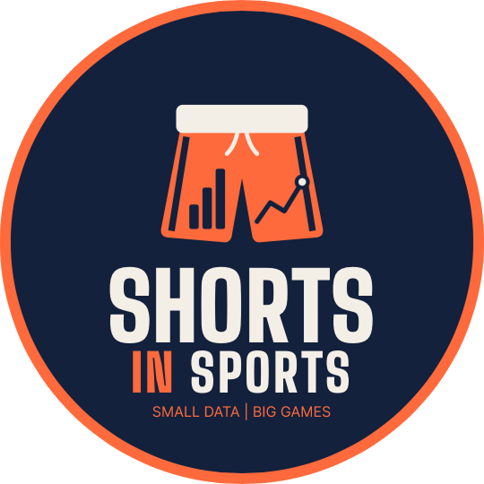
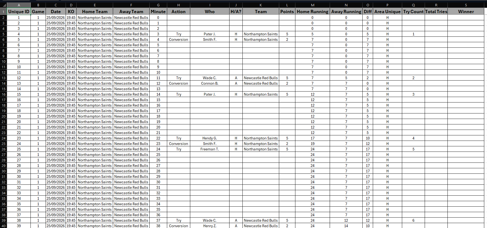

Introducing Shorts In Sports
Every sporting event is packed with stories. A last-minute winner, a record that stood for decades, an underdog run nobody saw coming. Behind every one of those moments is data, and behind that data is a story waiting to be told.

Chris Westlake and I are starting a new Tableau Community initiative called Shorts In Sports. This post is the introduction: what it is, why we are doing it, and how you can get involved.
What It Is
Shorts In Sports is built around one simple idea. We share a small, fun dataset from a sporting event, and you show us what you see in it. It might be a single match, a race, a tournament, or one standout performance. The data will be bite-sized on purpose, so you can jump in, explore, and build something without needing a whole weekend.
There is no single right answer. One person might build a clean, minimalist view of the key moment. Another might go all in on design and bring the atmosphere of the stadium to life. Someone else might find an angle nobody expected. That is the whole point: same data, many different stories.
Why We're Doing It
Sport already gives us the drama. The dataset is just the way in. We want a place in the Tableau Community where a match, a race, or a single performance can be picked apart by lots of people at once, each of them telling a different version of the same event.
Keeping the data small is deliberate. A huge workbook can put people off before they start. A short dataset lowers that bar. You can try an idea, finish a viz, and still have your weekend.
Whether you are a sports fanatic or could not name a single player, whether you have been using Tableau for years or you are building your first viz, you are welcome here. The interesting part is not who knows the sport best. It is what you notice when you look at the numbers.
How To Get Involved
When a challenge goes out, the loop is simple:
- Download the datafor that event from my Github repository. Open the file in the repo and click Raw.
- Create your viz. Minimal, loud, unexpected: all of those count.
- Publish it to Tableau Public.
- Share it with the community using#ShortsInSports
Let's Get Started
Here is the first dataset we are sharing.
Link to the file on Github here: Gallagher Prem Opening Weekend Try Dataset

The Gallagher PREM is the top division of men's club rugby union in England. Ten teams compete, with the 2026-27 season running from 25 September 2026 to 19 June 2027, and reigning champions Northampton Saints began their title defence at home against Newcastle Red Bulls. We have collated data for every match from the opening weekend, which produced a record number of tries. We want you to build a viz that shows us something interesting about the data.
What did I do with the data?
We cannot wait to see how you tell the story.
Rob.